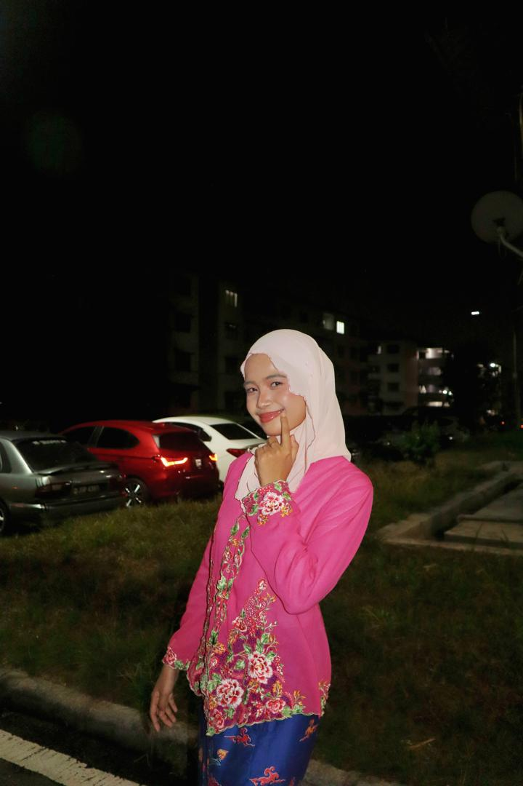

About Me
I’m Fatin Syakirah (Kirah), a Computer Science student at Universiti Teknologi Malaysia, specializing in Bioinformatics.
I love building visually appealing, accessible web projects and enjoy hobbies like gaming, web design, and yoga for relaxation.
My Favourite Hobby 🎮
If there’s one thing I’m passionate about, it’s gaming. It’s more than just a hobby — it’s how I recharge and push my limits. My current rotation includes competing in high-stakes matches, exploring user-generated worlds, and running cozy management simulators.
There’s nothing quite like the feeling of escaping into a game after a tiring day. It doesn’t just make me happier, it actually builds my mental focus and teamwork abilities. For me, gaming is the perfect blend of personal growth and pure fun.